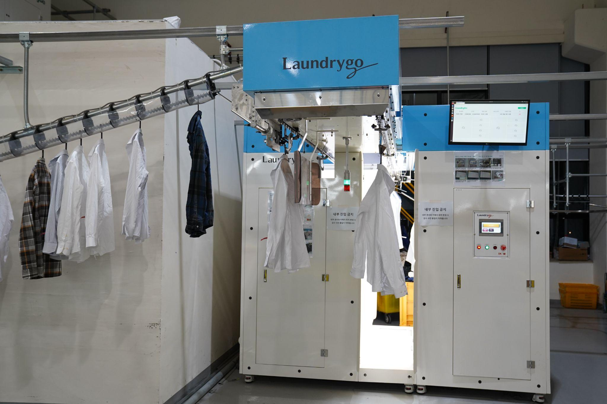
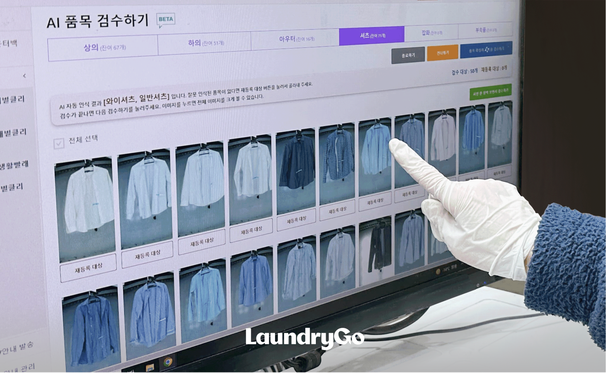

혁신의 핵심, AI 스타일 스캐너
비교할 수 없는 속도와 정확성으로 세탁 공정을 혁신합니다.
압도적인 처리 속도
시간당 0벌의 의류를 신속하게 촬영하여 대량의 세탁물을 효율적으로 처리합니다.
AI 기반의 정확한 분석
최첨단 AI 비전 인식 기술로 다양한 의류를 정확하게 식별하고 품목별로 자동 분류하여 오류를 최소화합니다.
4K 초고화질 이미지
4K 해상도로 의류의 작은 디테일까지 놓치지 않고 촬영하여 정밀한 상태 파악 및 검수가 가능합니다.
완벽한 자동화 프로세스
의류 투입부터 최종 분류까지, 모든 과정이 자동으로 이루어집니다.
1
의류 투입
옷걸이에 걸린 의류를 컨베이어에 올리면 자동으로 스캐너로 이동합니다.
2

자동 촬영
의류당 10장의 사진을 4K 초고화질로 신속하게 촬영합니다.
3

AI 분석 및 검수
AI가 이미지를 분석해 품목을 인식하고, 작업자는 모니터로 최종 검수를 진행합니다.
4
자동 배출
검수가 완료된 의류는 성공/실패 슬롯으로 자동 분류 및 배출됩니다.
상세 스펙
최고의 성능을 위한 기술 사양
- 1촬영 속도: 시간당 720벌 (분당 12벌)
- 2사진 해상도: 4K (3840 x 2160)
- 3촬영수: 의류당 총 10장
- 전면/후면 각 1장 (총 2장)
- 정면/후면 각 3등분 촬영 (총 6장)
- 정면/후면 목 부위 촬영 (총 2장) - 4배출 시스템: 배출슬롯 2개 (성공/실패)
- 5모니터링: 촬영 결과 실시간 확인 가능
원본 사진
AI 처리 사진
생생한 작동 현장
AI 스타일 스캐너가 실제로 어떻게 작동하는지 영상으로 확인해보세요.
도입 문의
AI 스타일 스캐너에 대해 더 궁금한 점이 있으신가요?
지금 바로 문의하여 세탁 비즈니스의 미래를 앞당기세요.